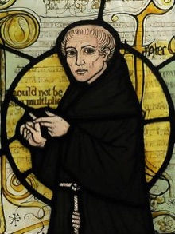

c. 1287-1347 · Faith and Reason
← The philosophy map · About Ockham
Is the simplest explanation usually the right one?
You come home and find the kitchen window open and the cake gone from the table. Did a burglar climb in, eat only the cake and leave your laptop? Or did your little brother, who loves cake, open the window? Most people choose the brother without thinking. Seven hundred years ago, an English friar turned that instinct into a famous rule.
Read one part at a time. After each part, close your eyes and answer the question before you check.
William was born around 1287 in Ockham, a small village in Surrey, south-west of London. That is why we call him William of Ockham. He joined the Franciscans, a group of friars who believed in living very simply and owning almost nothing. He studied and taught at Oxford, where he became known as a sharp and fearless thinker who questioned the complicated theories of the great teachers before him.
Why is he called 'William of Ockham'?
Ockham often used one simple rule: don't assume more things than you need to explain something. If two explanations fit the facts, choose the one with fewer extra parts. He never wrote the famous sentence 'Entities should not be multiplied beyond necessity', but he said similar things many times. Centuries later, people named the rule 'Ockham's razor', because it shaves away everything an explanation doesn't need. Scientists, doctors and detectives still use it today.
What does Ockham's razor tell you to do?
His ideas made him enemies. In 1324 he was called to the Pope's court in Avignon, in the south of France, to answer for his teaching. There he joined other Franciscans in a bitter argument with the Pope about whether Jesus and his followers owned property. In 1328 they secretly escaped and found protection with the Holy Roman Emperor in Munich. He is said to have told the emperor, 'Defend me with the sword, and I will defend you with the pen.' He died there in 1347.
Where did Ockham spend the end of his life, and why?
Each word is hidden in a sentence. Read it aloud and say what you think the bold word means. Then reveal and compare.
For each mystery, would Ockham's razor keep this explanation, or shave it away because it adds things we don't need? Decide together, then reveal.
Now you: explain Ockham's razor to a friend who loves conspiracy theories. Speak for about a minute. Use the starters if they help.
Several people in a small town see bright lights moving across the night sky. Explanation A: it was a new kind of drone or satellite that most people haven't seen before. Explanation B: it was something truly unknown, which our science can't explain yet. Neither explanation has been proved.
Tap two cards. Use the timer to keep going, and use at least two of the phrases above.
No looking back. Answer from memory first, then check.
How did Aquinas build every argument in the Summa?
What does Avicenna's flying man show, according to Avicenna?
What did Marcus Aurelius mean by the inner citadel?
What did Democritus say everything is made of?
From memory, out loud. Then check.
1. What does Ockham's razor say?
2. Did Ockham write the famous sentence about not multiplying entities?
3. Why did Ockham end his life in Munich?
4. What does 'far-fetched' mean? Give an example.